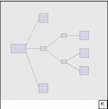

Overview Pane The Overview Pane functions the same for all types of topology views. To access the Overview Pane, click the arrow in the upper left-hand corner of the display pane. Click the arrow again to close the Overview pane. Figure 22 Topology - overview pane  It displays an abstracted image of the fully-zoomed out display pane as an aid to moving around in very large topologies. Left-click and hold on the gray overlay to pan around the display pane, which is equivalent to simultaneous use of the vertical and horizontal scroll bars. The Desktop Console provides some shortcuts that allow you to rapidly access the topology feature.